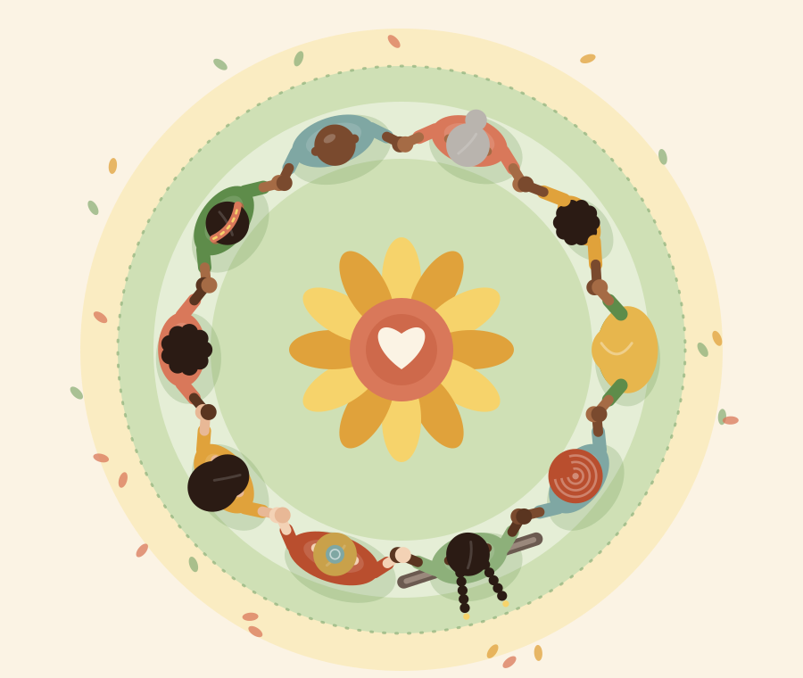
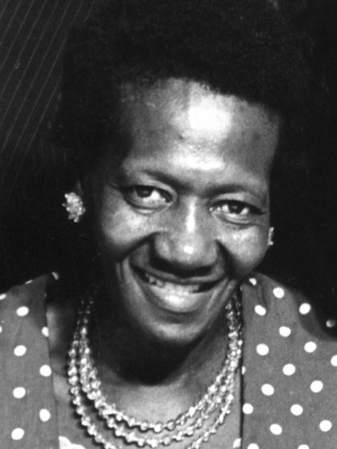
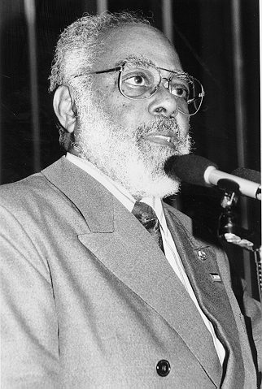
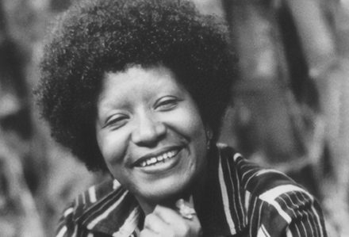
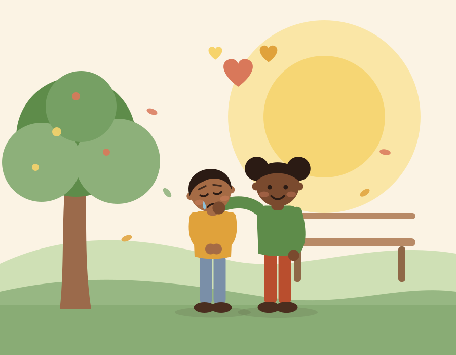

Zumbi dos Palmares
Líder do Quilombo dos Palmares, a maior comunidade de resistência à escravidão das Américas coloniais, na Serra da Barriga (AL). Foi morto em 20 de novembro de 1695, data que hoje é o Dia da Consciência Negra.
Em 20 de novembro, o Brasil lembra Zumbi dos Palmares e a luta de um povo que construiu este país e ainda precisa provar, todos os dias, que merece respeito. Este espaço é para olhar essa história de frente, entender como o racismo funciona e decidir o que você faz a respeito. Se você é negro, aqui você é protagonista. Se não é, aqui você aprende a ouvir.

“Numa sociedade racista, não basta não ser racista. É preciso ser antirracista.” Angela Davis, ativista e filósofa. Quem fica neutro diante do racismo não protege ninguém.
Escolheu-se o 20 de novembro porque é o dia da morte de Zumbi, em 1695, e não o 13 de maio de 1888, quando a escravidão foi abolida por lei. A mudança de data diz muito: o povo negro não esperou ser “libertado”. Resistiu, fugiu, formou quilombos, lutou na Justiça e escreveu a própria história durante séculos.
Por mais de três séculos, cerca de 4,8 milhões de africanos foram trazidos à força para o Brasil, o país que mais recebeu pessoas escravizadas no mundo. A Lei Áurea, de 1888, acabou com a escravidão, mas não garantiu terra, escola, emprego nem respeito para quem foi libertado. Essa conta, o Brasil ainda está pagando.
Hoje, mais da metade da população brasileira é negra: segundo o Censo 2022, 55,5% das pessoas se declaram pretas ou pardas. Ainda assim, mais de 7 em cada 10 vítimas de homicídio no país são pessoas negras, e a presença negra é menor nos cargos de comando, nas universidades de maior prestígio e na mídia. Isso não é coincidência: tem nome, e o nome é racismo.
A escola costuma contar a história negra a partir da escravidão. Comece por quem criou, ensinou, lutou e transformou o país. Estas são as pessoas, com seus rostos, quando existem registros.
Líder do Quilombo dos Palmares, a maior comunidade de resistência à escravidão das Américas coloniais, na Serra da Barriga (AL). Foi morto em 20 de novembro de 1695, data que hoje é o Dia da Consciência Negra.

Liderou o Quilombo do Quariterê, em Mato Grosso, por duas décadas. Organizou defesa, produção e política da comunidade. O 25 de julho é o Dia Nacional de Tereza de Benguela e da Mulher Negra.

Nascido livre, foi vendido ilegalmente como escravizado aos 10 anos. Aprendeu a ler sozinho, virou advogado e libertou centenas de pessoas na Justiça. Hoje é reconhecido como advogado e abolicionista.

Um dos maiores escritores da língua portuguesa. Negro e de origem pobre, fundou a Academia Brasileira de Letras e foi seu primeiro presidente. Durante muito tempo seu retrato foi “embranquecido”.

Catadora de papel e moradora da favela do Canindé, em São Paulo. Escreveu o diário “Quarto de Despejo” (1960), um dos livros mais lidos do país, traduzido para vários idiomas.

Fundou o Teatro Experimental do Negro, em 1944, para que atores negros ocupassem o palco como protagonistas. Foi deputado, senador e uma das vozes mais fortes do movimento negro.

Filósofa, antropóloga e ativista. Mostrou como racismo e machismo se cruzam e criou o conceito de “amefricanidade”, que valoriza a herança africana presente em todo o continente.
Filósofa e escritora, fundou o Geledés – Instituto da Mulher Negra. Foi quem aprofundou, no Brasil, o conceito de epistemicídio: o apagamento dos saberes e da inteligência da população negra, sobretudo na educação.
Escritora mineira, criou a “escrevivência”: escrever a partir da experiência de vida de mulheres negras. Trabalhou como empregada doméstica antes de se tornar uma das vozes mais lidas da literatura brasileira.
Socióloga e vereadora do Rio de Janeiro, mulher negra, lésbica e nascida na favela da Maré. Defendia os direitos humanos, as mulheres e a população das favelas. Foi assassinada em 14 de março de 2018.
E há as professoras, os porteiros, as rezadeiras, as mães e os estudantes negros que seguram o Brasil todos os dias e raramente aparecem nos livros. Pergunte-se: quantos nomes desta lista você já conhecia? Se foram poucos, isso tem nome, e é o assunto da próxima parte.
Epistemicídio é a destruição, o apagamento ou a desqualificação dos conhecimentos de um povo. A palavra junta episteme (conhecimento) e cídio (matar): matar o saber.
O sociólogo português Boaventura de Sousa Santos usou o termo para falar do que o colonialismo fez com os saberes de povos não europeus. No Brasil, a filósofa Sueli Carneiro mostrou como ele atinge a população negra, sobretudo na escola: quando o saber de um grupo é tratado como inferior, o grupo inteiro passa a ser visto como incapaz. É assim que o epistemicídio sustenta outras desigualdades.
Conhecimentos africanos e afro-brasileiros de cura, de cultivo, de mineração, de culinária e de espiritualidade foram tratados como folclore, superstição ou “coisa de macumba”, enquanto o saber europeu era chamado de ciência.
Baixar as expectativas de estudantes negros, achar que “não levam jeito” ou elogiar com surpresa: “nossa, como você é inteligente!”. A dúvida vira profecia: quem ouve que não é capaz passa a acreditar.
Estudar a história negra só a partir da escravidão, nunca ler autores negros e contar o Brasil como se tivesse sido feito por outras pessoas. O que não está nos livros parece que nunca existiu.
Divulgar retratos de Machado de Assis com a pele clareada, esquecer que Luís Gama foi advogado, tratar Carolina Maria de Jesus como “a favelada que escreve” e não como escritora. A pessoa é reconhecida só quando se parece com quem tem poder.
Escolas com menos recursos, falta de livros, universidades de difícil entrada. Sem acesso, o saber não circula nem é reconhecido, e a falta de reconhecimento vira “prova” de que o saber não existia.
Epistemicídio é a destruição, o apagamento ou a desqualificação dos conhecimentos de um povo. A palavra junta episteme (conhecimento) e cídio (matar): matar o saber.
O sociólogo português Boaventura de Sousa Santos usou o termo para falar do que o colonialismo fez com os saberes de povos não europeus. No Brasil, a filósofa Sueli Carneiro mostrou como ele atinge a população negra, sobretudo na escola: quando o saber de um grupo é tratado como inferior, o grupo inteiro passa a ser visto como incapaz. É assim que o epistemicídio sustenta outras desigualdades.
Conhecimentos africanos e afro-brasileiros de cura, de cultivo, de mineração, de culinária e de espiritualidade foram tratados como folclore, superstição ou “coisa de macumba”, enquanto o saber europeu era chamado de ciência.
Baixar as expectativas de estudantes negros, achar que “não levam jeito” ou elogiar com surpresa: “nossa, como você é inteligente!”. A dúvida vira profecia: quem ouve que não é capaz passa a acreditar.
Estudar a história negra só a partir da escravidão, nunca ler autores negros e contar o Brasil como se tivesse sido feito por outras pessoas. O que não está nos livros parece que nunca existiu.
Divulgar retratos de Machado de Assis com a pele clareada, esquecer que Luís Gama foi advogado, tratar Carolina Maria de Jesus como “a favelada que escreve” e não como escritora. A pessoa é reconhecida só quando se parece com quem tem poder.
Escolas com menos recursos, falta de livros, universidades de difícil entrada. Sem acesso, o saber não circula nem é reconhecido, e a falta de reconhecimento vira “prova” de que o saber não existia.
Muita gente sofre, ou machuca, sem saber como chamar aquilo. Doze palavras para enxergar melhor, com o racismo no centro, e escolher melhor.
É tratar pessoas de forma pior, ou melhor, por causa da cor da pele e da origem. Não é opinião, nem “mimimi”: é um sistema de ideias e de práticas que coloca pessoas brancas como padrão e pessoas negras como exceção. Não existem raças humanas, mas o racismo existe e machuca.
É quando o racismo está nas regras do dia a dia, e não só em atos de pessoas más: quem tem acesso a boa escola, quem é seguido na loja, quem é chamado para a entrevista. Ninguém precisa gritar ofensas para que ele funcione. Basta que tudo continue como sempre foi.
É o racismo disfarçado de piada: o apelido sobre cor ou cabelo, o “só estava brincando”. Quem faz ri, e quem recebe aprende que precisa rir junto para não virar problema. Não existe graça que dependa de humilhar um grupo inteiro.
É julgar antes de conhecer. Pega-se um rótulo (cor, religião, corpo, sotaque, bairro) e cola-se numa pessoa inteira. Quando esse julgamento vira ação, vira discriminação. Ninguém nasce com preconceito: a gente aprende e, por isso, também pode desaprender.
São palavras que atacam alguém pelo grupo a que pertence, e não pelo que fez. Elas transformam pessoas em “esses aí” e preparam o caminho para a violência. No Brasil, o racismo é crime inafiançável. Palavra não é vento: ela fica.
É humilhar pela tela: comentários, prints, montagens, perfis falsos. Muitas vezes mira o cabelo, a cor ou o nome de alguém. Não tem hora para acabar e se espalha em minutos. Quem curte e repassa também agride, mesmo sem escrever nada.
É a violência silenciosa: o grupo que muda de assunto quando você chega, o trabalho em que ninguém te chama, o único aluno negro da sala que nunca é escolhido. Ninguém encosta em ninguém, mas a mensagem é “você não pertence”. E isso dói.
É tudo o que fere o corpo, a mente ou a dignidade de alguém: o empurrão, a ameaça, o apelido repetido, o silêncio imposto. Quase sempre começa disfarçada de brincadeira. Quem não interrompe o começo ajuda a construir o final.
É não aceitar que o outro pense, creia ou viva diferente. No Brasil, as religiões de matriz africana, como o candomblé e a umbanda, estão entre as mais atacadas. Tolerar não é concordar: é reconhecer que o outro pode existir sem a sua aprovação.
É sentir um pouco do que o outro sente e deixar isso mudar o que você faz. Não é pena. Para quem nunca viveu racismo, começa por escutar quem viveu, sem mandar a pessoa “não ligar”, e acreditar no que ela conta.
É tratar o outro como alguém inteiro. Não exige que você goste, concorde ou seja amigo; exige que não humilhe nem decida por ele quem ele pode ser. É o mínimo, e o mínimo muda tudo.
É agir, e não apenas não ofender. Interromper a piada, apoiar quem sofre, estudar a história, ler e valorizar autores negros, olhar quem está (e quem não está) na sala, na equipe, no livro. Ser antirracista é uma prática diária, não um título.
Leia devagar. Ninguém vai ver suas respostas: responda só para você. As perguntas que dão vontade de mudar de assunto são as que mais importam.
Refletir sobre as próprias atitudes não é se condenar: é um ato de coragem. É por onde toda mudança começa.
Onde houver ódio, que eu leve o amor. Onde houver ofensa, que eu leve o perdão.
Escolha a atitude que mais parece com a sua. Você vai ver na hora o que ela provoca em quem está do outro lado — porque toda escolha chega em alguém.

Quem sofre racismo costuma ouvir “deixa pra lá”, “é brincadeira” ou “tá vendo coisa onde não tem”. Isso faz a pessoa duvidar da própria dor. Quando alguém diz “eu vi, e foi racismo”, essa dúvida desaparece. A dor continua, mas deixa de ser carregada sozinha.
O acolhimento também enfraquece quem agride, porque a agressão depende de plateia, de risada e de silêncio. Se você não é negro, sua função não é falar no lugar de quem é: é não rir, não repassar, apoiar, abrir espaço e deixar que a pessoa conduza a própria história.
Nenhuma exige heroísmo. Todas exigem uma decisão pequena, tomada quando seria mais fácil não decidir.
Escute antes de aconselhar. Acredite no que a pessoa conta e não diga “não liga” nem “tá exagerando”. Quem vive o racismo sabe reconhecê-lo. Muitas vezes, basta ouvir: “eu acredito em você”.
Quem ri, filma ou curte faz parte da agressão. Você não precisa enfrentar ninguém: um “isso não tem graça”, ou ficar ao lado de quem é alvo, já tira o palco de quem agride. Silêncio diante do racismo é escolher um lado.
Falar com um adulto de confiança, a coordenação, a pastoral, a família ou o Disque 100 não é dedurar: é proteger. Racismo é crime e não se resolve com segredo.
Não repasse o print, nem “para mostrar como é absurdo”: isso espalha a humilhação. Denuncie na plataforma, guarde as provas para um adulto, bloqueie e não responda no mesmo tom.
Muitas expressões do dia a dia carregam racismo: “denegrir”, “cabelo ruim”, “serviço de preto”, “a coisa tá preta”. Troque-as, sem drama. Quando errar, peça desculpas de verdade e aprenda. Mudar de atitude é força, não fraqueza.
Convide para sentar, para o grupo, para a conversa. Dê espaço para vozes negras na sala, no trabalho em grupo e no livro que você indica. Um convite simples pode ser a primeira coisa boa do dia de alguém.
Gratuitos, sigilosos e sem julgamento. Você pode ligar mesmo que só queira conversar.
Em risco imediato ou emergência, ligue 190 (Polícia) ou 192 (SAMU).
Mande apoio a quem sofre, conte um relato ou assuma um compromisso antirracista. Sua mensagem aparece na hora para todas as pessoas que abrirem esta página.